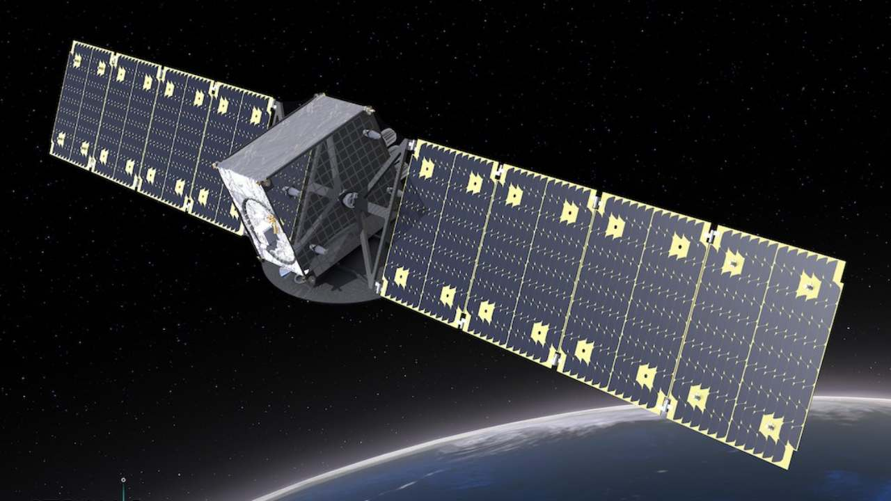
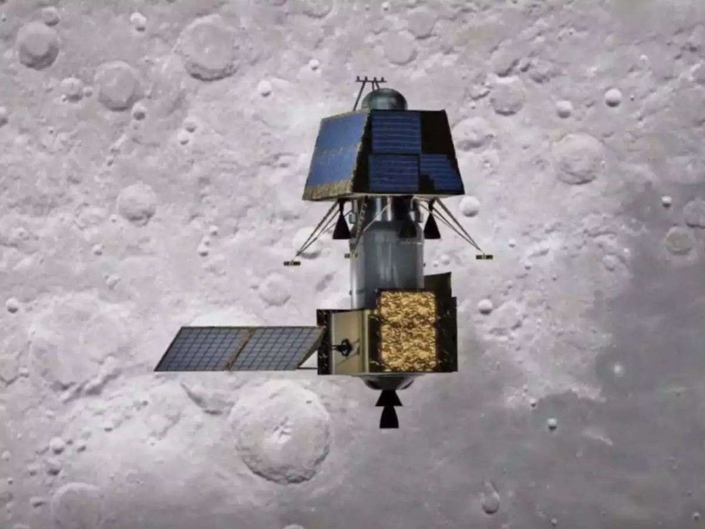

Communication Satellites
1 / 3

Supports telecommunication, television broadcasting, satellite news
gathering, societal applications, weather forecasting, disaster
warning and Search and Rescue operation services.
Earth Observation Satellites
2 / 3

The largest civilian remote sensing satellite constellation in the
world - thematic series of satellites supporting multitude of
applications in the areas of land and water resources; cartography;
and ocean & atmosphere.
Scientific Satellites
3 / 3

Spacecraft for research in areas like astronomy, astrophysics,
planetary and earth sciences, atmospheric sciences and theoretical
physics.
❮
❯